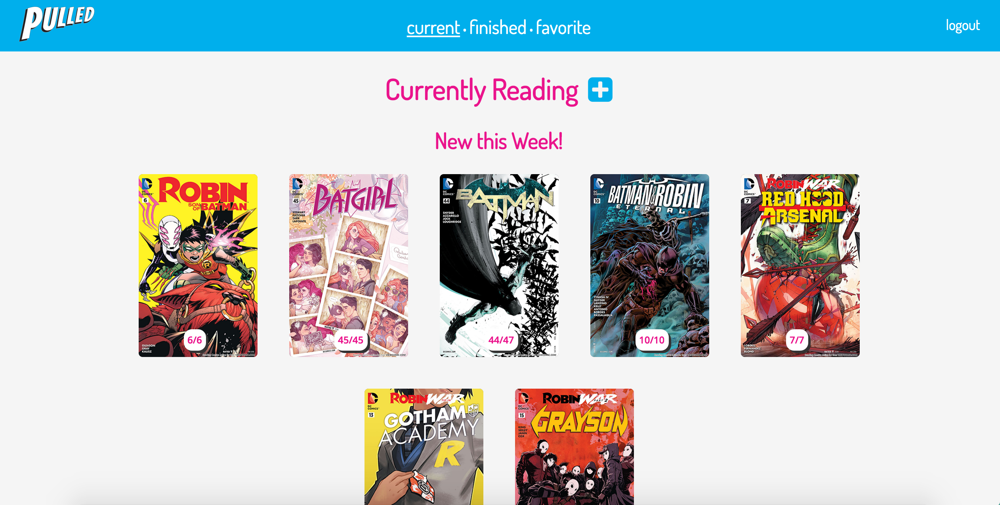

Pulled: A Comics Tracker

For my Interaction Design class, we were tasked to design a web app that functions as a tracker.
I chose to create a comic book tracker, to help people keep track of the different comic books that
they have read. We spent a few months going through various iteration and user testing phases, resulting
in a prototype. Please note that the protoype only exists to give a general idea of the intended design. It does not fully work and has a few missing pages. You can click here to see my process document, or
click here to view the prototype.